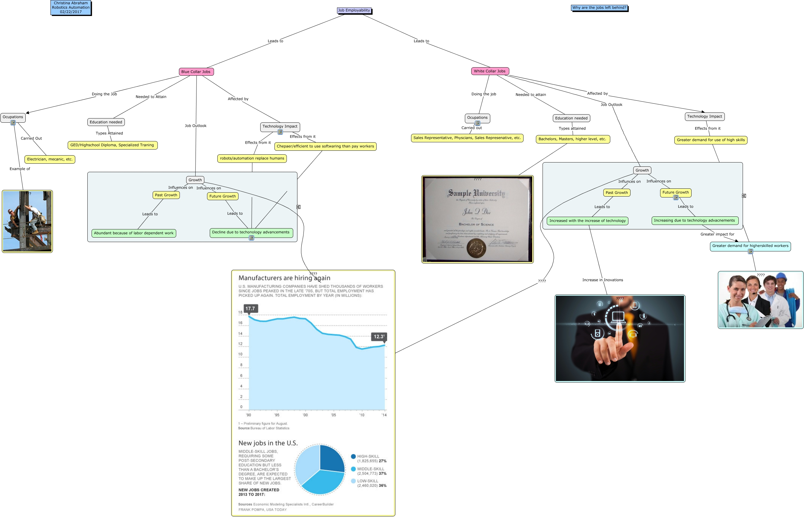

WARNING:
JavaScript is turned OFF. None of the links on this concept map will
work until it is reactivated.
If you need help turning JavaScript On, click here.
This Concept Map, created with IHMC CmapTools, has information related to: cmaps, Ocupations Carried Out Electrician, mecanic, etc., Increased with the increase of technology Increase in Inovations ????, Ocupations Example of ????, Blue Collar Jobs Needed to Attain Education needed, Blue Collar Jobs Affected by Technology Impact, Growth ???? ????, Future Growth Leads to Decline due to techonology advancements, Ocupations Carried out Sales Representative, Physcians, Sales Represenative, etc., White Collar Jobs Affected by Technology Impact, Blue Collar Jobs Doing the Job Ocupations, Past Growth Leads to Increased with the increase of technology, Blue Collar Jobs Job Outlook Growth, Bachelors, Masters, higher level, etc. ???? ????, Growth Influnces on Past Growth, Growth Influences on Past Growth, White Collar Jobs Needed to attain Education needed, Greater demand for use of high skills ???? Greater demand for higherskilled workers, Job Employability Leads to White Collar Jobs, Chepaer/efficient to use softwaring than pay workers ???? Decline due to techonology advancements, Increasing due to technology advacnements Greater impact for Greater demand for higherskilled workers
